Monsters refers to the many antagonistic creatures and entities the player will encounter throughout the game.
Most monsters (with few exceptions) will damage Isaac by either touching him or shooting him with projectiles. Less frequently, monsters will spawn additional, lesser monsters, spread creep, or attempt to affect the player's movement. Some monsters become tougher the further along they're encountered. Along with the more common variety of monsters, champion versions can be found lurking about; these monsters are often like their common counterparts, but have a color tint or size change, more health, and drop basic pickups on death. There are also champion versions of most bosses.
There are 336 naturally spawning monsters in total. 40 of them were added in Afterbirth, 21 were added in Afterbirth † (13 were added in Booster Packs) and 140 were added in Repentance. Almost all of these naturally spawning entities are featured in the  Afterbirth+ Bestiary or
Afterbirth+ Bestiary or  Repentance Bestiary.
Repentance Bestiary.
Monster List
| Entity | ID | Description |
|---|---|---|
| Siren Minion 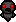 |
3.220 | Spawned in automatically charmed by The Siren. Orbits the boss and fires projectiles towards Isaac. |
| Frowning Gaper |
10.0 | Walks towards Isaac, dealing contact damage. They start out with their eyes closed, but when they gain line of sight with Isaac, their eyes open and they permanently move faster. Usually turns into a |
| Gaper |
10.1 | Walks towards Isaac, dealing contact damage. Usually turns into a |
| Flaming Gaper |
10.2 | Walks towards Isaac, dealing contact damage. Usually turns into a |
| Rotten Gaper |
10.3 | Walks toward Isaac, dealing contact damage. Its behavior varies slightly depending on its facial expression. |
| Gusher |
11.0 | Walks aimlessly around the room, occasionally firing a short-ranged blood shot. |
| Pacer |
11.1 | Walks aimlessly around the room. |
| Horf |
12.0 | Stationary enemy that fires a medium-ranged blood shot at Isaac when he gets in range of them. |
| Fly |
13.0 | Hovers in place. Does not deal contact damage and is harmless, but can turn into |
| Pooter |
14.0 | Slowly drifts toward Isaac, occasionally firing a single blood shot at him. Does not deal contact damage. |
| Super Pooter |
14.1 | Slowly drifts toward Isaac, occasionally firing two blood shots in a V-formation at him. Does not deal contact damage. |
| Tainted Pooter |
14.2 | Slowly drifts toward Isaac, occasionally firing four blood shots at him that split into two smaller ones when they hit a wall or obstacle. |
| Clotty 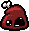 |
15.0 | Randomly wanders around the room, firing 4 blood shots in the cardinal directions. |
| Clot 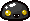 |
15.1 | Randomly wanders around the room, firing 4 tar shots in the ordinal directions. |
| I.Blob 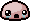 |
15.2 | Randomly wanders around the room, firing 8 shots in all directions. |
| Grilled Clotty |
15.3 | Quickly and randomly wanders around the room, firing four flame shots in the cardinal directions at a slight angle. |
| Mulligan |
16.0 | Walks around the room, avoiding Isaac. Upon death, spawns several flies, which can be |
| Mulligoon 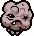 |
16.1 | Walks around the room, avoiding Isaac. Upon death, spawns a Troll Bomb and fires four shots in the ordinal directions. Can self-detonate, spawn a Troll bomb, and launch eight projectiles in all directions. |
| Mulliboom 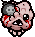 |
16.2 | Chases Isaac and explodes upon death or upon touching Isaac. The explosion deals a half-heart of damage instead of the regular full heart. |
| Attack Fly |
18.0 | Red fly that follows Isaac and deals contact damage. |
| Maggot |
21.0 | Aimlessly moves around the room, dealing contact damage. |
| Hive 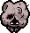 |
22.0 | Wanders around the room, avoiding Isaac and spawning |
| Drowned Hive 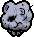 |
22.1 | Wanders around the room, avoiding Isaac and spawning Drowned Chargers if he gets close. Spawns 0-2 Drowned Chargers upon death. |
| Holy Mulligan 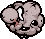 |
22.2 | Wanders around the room, avoiding Isaac and spawning Angelic Baby (small) if he gets close. Spawns 1-2 Embryos upon death. |
| Tainted Mulligan 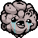 |
22.3 | Wanders around the room, avoiding Isaac and spawning 6 |
| Charger |
23.0 | Slowly moves around the room, charging at Isaac when he gets in its line of sight. |
| My Shadow |
23.0.1 | Charges at enemies when in its line of sight, dealing contact damage. Will always spawn friendly via My Shadow. |
| Drowned Charger |
23.1 | Slowly moves around the room, charging at Isaac when he gets in its line of sight. Explodes into four blood shots in the ordinal directions upon death. |
| Dank Charger |
23.2 | Slowly moves around the room, launching itself at Isaac if he gets in its line of sight. Bounces off of walls and leaves a trail of slowing Black Creep while charging. |
| Carrion Princess 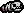 |
23.3 | Slowly moves around the room, charging at Isaac when he lines up diagonally with it. Can only be damaged by hitting its tail. |
| Globin |
24.0 | Chases Isaac, dealing a full heart of contact damage. Upon taking enough damage, it collapses into a pile of goo, which can be killed. Will regenerate after a short period of time if not killed quickly. |
| Gazing Globin |
24.1 | Quickly chases Isaac, dealing a full heart of contact damage. Upon taking enough damage, it collapses into a pile of goo, which will slide away from Isaac and can be killed. Will regenerate after a short period of time if not killed quickly. |
| Dank Globin |
24.2 | Chases Isaac, dealing a full heart of contact damage. Upon taking enough damage, it collapses into a pile of goo, spawns a |
| Cursed Globin |
24.3 | Chases Isaac, dealing a full heart of contact damage. Upon taking enough damage, it collapses into 1-2 piles of goo, each of which can be killed and regenerate after a short period of time if not killed quickly. These goo piles have less health the more times the Cursed Globin splits. |
| Boom Fly |
25.0 | Flies across the room in straight diagonal lines, dealing contact damage. Explodes upon death. |
| Red Boom Fly |
25.1 | Flies across the room in straight diagonal lines, dealing contact damage. Creates a ring of 6 blood shots upon death. |
| Drowned Boom Fly 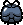 |
25.2 | Flies across the room in straight diagonal lines, dealing contact damage. Upon death, explodes and fires four blood shots in the cardinal directions. Also has a chance to spawn a Drowned Charger upon death. |
| Dragon Fly 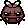 |
25.3.0 | Flies across the room in straight diagonal lines, dealing contact damage. Upon death, creates four lines of fire in the cardinal directions; the fire nearly spans the length of an entire normal-sized room. |
| Dragon Fly X 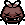 |
25.3.1 | Flies across the room in straight diagonal lines, dealing contact damage. Upon death, creates four lines of fire in the ordinal directions; the fire nearly spans the length of an entire normal-sized room. |
| Bone Fly |
25.4 | Flies across the room in straight diagonal lines, dealing contact damage. Fires bones at Isaac if he lines up with it in the cardinal directions. Fires a radial burst of 3 bones upon death. |
| Sick Boom Fly 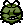 |
25.5 | Flies across the room in straight diagonal lines, dealing contact damage and trailing poisonous gas. Upon death, explodes into a gas cloud and fires a ring of 6 green shots. |
| Tainted Boom Fly |
25.6 | Flies across the room in straight diagonal lines, dealing contact damage. Upon death, it glows brightly, warning that it is about to explode; this explosion sends 4 lines of further explosions in the cardinal directions, which span the length of the room. |
| Maw |
26.0 | Slowly floats towards Isaac, firing a blood shot at him when he is in their range. |
| Red Maw |
26.1 | Floats quickly towards Isaac and releases 4 blood shots in the cardinal directions upon death. |
| Psychic Maw 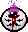 |
26.2 | Slowly floats towards Isaac, firing homing shots at him when he is in their range. Spawns with an Eternal Fly orbiting around it. |
| Host |
27.0 | Stationary enemy that is normally invulnerable. Raises its head up when Isaac gets close, revealing a fleshy stem that can be damaged. Upon raising its head, it will fire 3 blood shots in a spread and lower its head again. |
| Red Host 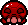 |
27.1 | Stationary enemy that can be damaged even when its head is lowered. Fire 5 spread blood shots when it raises its head. |
| Hard Host 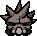 |
27.3 | Stationary enemy that is normally invulnerable. Raises its head up when Isaac gets close, revealing a fleshy stem that can be damaged. Shortly after raising its head, it slams its head down and fires a rock wave towards Isaac. |
| Hopper |
29.0 | Slowly hops around the room, doing contact damage. Can turn into a Flaming Hopper by jumping into |
| Trite |
29.1 | Quickly leaps towards Isaac and deals contact damage. |
| Eggy |
29.2 | Hops aimlessly around the room, spawning slowing white creep wherever it hops. Spawns a group of Swarm Spiders upon death. |
| Tainted Hopper 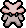 |
29.3 | Jumps and twirls around the room, shooting 4 rings of projectiles that increase in size with each shot. |
| Boil 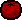 |
30.0 | Stationary enemy that decreases in size when hit, but regenerates to its full size until fully destroyed. Fires multiple short-ranged blood projectiles in random directions when fully swollen. |
| Gut 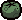 |
30.1 | Stationary enemy that decreases in size when hit, but regenerates to its full size until fully destroyed. Fires |
| Sack |
30.2 | Stationary enemy that decreases in size when hit, but regenerates to its full size until fully destroyed. Occasionally spawns |
| Spitty |
31.0 | Slowly moves around the room, occasionally firing a single blood shot forward. |
| Tainted Spitty |
31.1 | Slowly moves around the room, firing chaotic bursts of blood shots in all directions and occasionally spitting a line of blood shots in the direction it's facing. Fires two rotating rings of blood shots upon death. |
| Brain |
32.0 | Slowly crawls around the room, leaving a trail of Red Creep. |
| Leaper |
34.0 | Hops around the room, doing contact damage. Occasionally jumps high into the air, dropping down onto Isaac's position while firing 4 blood shots in the cardinal directions. |
| Sticky Leaper |
34.1 | Hops around the room, dealing contact damage. Occasionally jumps high into the air, dropping down onto Isaac's position while creating a chaotic burst of tar shots in all directions and a puddle of slowing black creep. |
| Mr. Maw 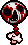 |
35.0 | Walks towards Isaac and attacks by launching its head towards him. Turns into a Maw or |
| Mr. Red Maw |
35.2 | Walks towards Isaac and attacks by launching its head towards him. Turns into a Red Maw or Gusher upon death depending on the killed body segment. Occasionally separates at will. |
| Baby 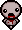 |
38.0 | Slowly floats towards Isaac and fires a blood shot at him. Occasionally teleports and reappears elsewhere. |
| Angelic Baby 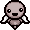 |
38.1.0 | Slowly floats towards Isaac and fires three spread shots. Occasionally teleports and reappears elsewhere. |
| Angelic Baby (small) |
38.1.1 | Slowly floats towards Isaac and fires a blood shot at him. Occasionally teleports and reappears elsewhere. Can only be spawned by Holy Mulligans. |
| Wrinkly Baby 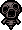 |
38.3 | Dashes towards Isaac at high speed and fires three blood shots in his direction once stopped. |
| Vis |
39.0 | Randomly wanders around the room. Pauses to charge and fire a Brimstone laser when Isaac gets in its line of sight. |
| Double Vis |
39.1 | Randomly wanders around the room. Pauses to charge and fire a Brimstone laser which fires from both sides when Isaac gets in its line of sight. |
| Chubber |
39.2 | Randomly wanders around the room. Pauses to fire a Charger that deals one heart of damage when Isaac gets in its line of sight. The Charger is invulnerable, blocks Isaac's tears, has limited range, and flies back to the Chubber. |
| Scarred Double Vis |
39.3 | Randomly wanders around the room. Pauses to charge and fire a Brimstone laser which fires from all four cardinal sides when Isaac gets in its line of sight. |
| Guts |
40.0 | Attaches itself to a wall or obstacle and rolls around it. |
| Scarred Guts |
40.1 | Attaches itself to a wall or obstacle and rolls around it, leaving a trail of damaging Red Creep. |
| Slog |
40.2 | Attaches itself to a wall or obstacle and rolls around it, charging at Isaac when he is in sight. |
| Knight 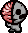 |
41.0 | Moves erratically around the room and charges towards Isaac when in line of sight. Can only be damaged from behind. |
| Selfless Knight 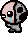 |
41.1 | Moves erratically around the room and charges towards Isaac very quickly when in line of sight. Can only be damaged from behind. |
| Loose Knight 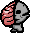 |
41.2 | Moves erratically around the room, charges toward Isaac when in line of sight. When its health is depleted, it turns into a Brainless Knight and a Pon. |
| Brainless Knight 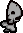 |
41.3 | Alternates between running around the room along the cardinal directions and aimlessly walking in circles. Charges at Isaac when in line of sight. Dies when its corresponding Pon dies. |
| Black Knight 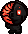 |
41.4 | Moves erratically around the room, charges toward Isaac when in line of sight. Unleashes waves of fire in all cardinal directions upon charging into an obstacle. Shots that hit it from the front are deflected back at Isaac. |
| Stone Grimace |
42.0 | Stationary and invulnerable monster that occasionally fires a blood shot at Isaac. Stops firing when room is cleared. |
| Vomit Grimace |
42.1 | Stationary and invulnerable monster that occasionally fires an Ipecac shot at Isaac. Stops firing when room is cleared. |
| Triple Grimace |
42.2 | Stationary and invulnerable monster that occasionally fires a triple shot at Isaac. Stops firing when room is cleared. |
| Poky |
44.0 | Slides around the room aimlessly, damaging Isaac by contact. Disappears when the room is cleared. |
| Slide |
44.1 | Quickly slides towards Isaac when he gets in its line of sight, then moves slowly back to its original position. Cannot be destroyed. |
| Dople 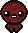 |
53.0 | Mirrors Isaac's movements and fires blood shots at the same time as Isaac. Can be damaged by spikes. |
| Evil Twin 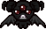 |
53.1 | Mirrors Isaac's movements and fires three spread blood shots at the same time as Isaac. Can fly over obstacles. |
| Flaming Hopper 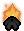 |
54.0 | Quickly hops around the room, doing contact damage. Covers a larger distance than the regular Hopper. |
| Leech |
55.0 | Quickly charges towards Isaac when he gets in its line of sight. |
| Kamikaze Leech 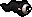 |
55.1 | Quickly charges towards Isaac when he gets in its line of sight. Explodes upon death. |
| Holy Leech |
55.2 | Quickly charges towards Isaac when he gets in its line of sight. Explodes upon death. Spawns with an Eternal Fly circling it, which instantly dies when the Holy Leech explodes. |
| Lump 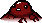 |
56.0 | Fires 3 spread blood shots at Isaac when he gets in its line of sight. Will burrow underground and reappear elsewhere after firing. |
| MemBrain |
57.0 | Slowly moves around the room, occasionally hopping and firing 8 large blood shots in all directions. Splits into 2 |
| Mama Guts |
57.1 | Slowly moves around the room, occasionally hopping and firing 8 large blood shots in all directions. Splits into 2 |
| Dead Meat |
57.2 | Slowly moves around the room, occasionally hopping and firing 8 large blood shots in all directions that bounce off the walls. Splits into 2 |
| Para-Bite |
58.0 | Moves towards Isaac, dealing contact damage. Can burrow underground and reappear elsewhere. |
| Scarred Para-Bite |
58.1 | Moves towards Isaac, dealing contact damage and firing a short-range blood shot at him. Can burrow underground and reappear elsewhere. |
| Fred 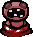 |
59.0 | Hops out of the ground and burrows elsewhere, firing 4 blood shots in the cardinal directions. Occasionally fires red Ipecac shots at Isaac. |
| Eye 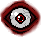 |
60.0 | Slowly turns towards Isaac and fires a Technology laser at Isaac if he stands still or is too slow. |
| Bloodshot Eye 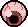 |
60.1 | Slowly turns towards Isaac and fires a Brimstone beam at Isaac if he stands still or is too slow. |
| Holy Eye |
60.2 | Rapidly summons several beams of light around Isaac every few seconds. |
| Sucker |
61.0 | Flies slowly towards Isaac, exploding into 4 shots in the cardinal directions upon death. |
| Spit |
61.1 | Flies slowly towards Isaac, firing an |
| Soul Sucker |
61.2 | Flies slowly towards Isaac. Spawns a vortex that fires four |
| Ink |
61.3 | Flies slowly towards Isaac. Fires four shots in the ordinal directions and leaves a puddle of slowing Black Creep upon death. |
| Mama Fly |
61.4 | Flies more-or-less away from Isaac, occasionally plopping on the ground to plant a |
| Bulb |
61.5 | Flies in erratic, angled movements toward Isaac if his active item has charges; on contact, they drain up to 2 charges, but never deal contact damage. If he has no active item, or no charges, they wander around the room aimlessly. |
| Bloodfly |
61.6 | Spawned only after a |
| Tainted Sucker |
61.7 | Flies slowly towards Isaac. Upon death, fires a radial burst of six blood shots that each also fires a radial burst of six blood shots. |
| Death Scythe |
66.10 | Stays stationary for a few seconds, then homes in on Isaac. |
| Peep Eye |
68.1 | Invulnerable enemy that floats diagonally over obstacles and bounces off of walls, blocking tears and dealing contact damage. Spawned by Peep as apart of his fight. |
| Bloat Eye |
68.11 | Invulnerable enemy that floats diagonally over obstacles and bounces off of walls, blocking tears and dealing contact damage. Spawned by The Bloat as apart of his fight. |
| Embryo |
77.0 | Aimlessly hops around the room, dealing contact damage. |
| Moter |
80.0 | Follows Isaac, similar to |
| Spider |
85.0 | Erratically moves around the room. If Isaac gets close to it, it chases him, trying to deal contact damage. |
| Keeper |
86.0 | Hops around the room, firing 2 blood shots in a V formation at Isaac. Upon damaging Isaac, Isaac drops 2 coins on the ground but loses 3. |
| Gurgle |
87.0 | Walks towards Isaac, dealing contact damage and periodically firing |
| Crackle |
87.1 | Walks toward Isaac, dealing contact damage and spitting fireballs that create lines of fire in the cardinal directions on impact. |
| Walking Boil 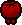 |
88.0 | Does not shrink or regenerate. Walks around aimlessly and fires multiple short-ranged blood projectiles in random directions. |
| Walking Gut 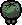 |
88.1 | Does not shrink or regenerate. Walks around aimlessly and fires |
| Walking Sack 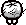 |
88.2 | Does not shrink or regenerate. Walks around aimlessly and occasionally spawns |
| Buttlicker |
89.0 | Can start attached to other Buttlickers and erratically moves around the room, similar to |
| Hanger |
90.0 | Floats around the room, firing 3 spread blood shots at Isaac. Upon damaging Isaac, Isaac drops 2 coins on the ground but loses 3. Spawns with an |
| Swarmer 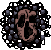 |
91.0 | Slowly floats around the room, spawning several |
| Mask + Heart |
93.0 | The Mask is invulnerable and moves around erratically, charging at Isaac when he lines up with it. The Heart avoids Isaac and fires 4 blood shots in the cardinal directions when Isaac gets near. Killing the Heart will automatically kill the Mask. |
| Mask II + 1/2 Heart |
93.1 | The Mask is invulnerable and moves around erratically, charging at Isaac when he lines up with it. The Heart avoids Isaac and fires 4 blood shots in the ordinal directions when Isaac gets near. Killing the Heart will automatically kill the Mask. If there are more than one 1/2 Heart in the room, they will fire blood shots between each other. |
| Big Spider 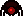 |
94.0 | Erratically moves around the room. If Isaac gets close to it, it chases him, trying to deal contact damage. Spawns two Spiders upon death. |
| Eternal Fly |
96.0 | Invulnerable fly that circles |
| Stone Eye 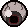 |
201.0 | Stationary and invulnerable monster that constantly rotates and fires a flickering Technology laser. Stops firing when the room is cleared. |
| Constant Stone Shooter 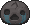 |
202.0 | Stationary and invulnerable monster that continuously fires shots in a single direction. |
| Cross Stone Shooter |
202.10 | Stationary and invulnerable monster that continuously fires shots in four directions, alternating between cardinal and ordinal. |
| Brimstone Head 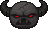 |
203.0 | Stationary and invulnerable monster that fires Brimstone beams in a specific direction. |
| Mobile Host |
204.0 | Acts like the Host, but follows Isaac and deals contact damage. |
| Nest 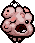 |
205.0 | Wanders around the room, avoiding Isaac and spawning |
| Baby Long Legs |
206.0 | Runs away from Isaac and frequently spawns Spiders. |
| Small Baby Long Legs |
206.1 | Runs away from Isaac and occasionally spawns Sacks. |
| Crazy Long Legs 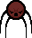 |
207.0 | Chases Isaac, dealing touch damage. Occasionally stops to spit 8 blood shots in all directions. |
| Small Crazy Long Legs |
207.1 | Chases Isaac, dealing touch damage. Occasionally stops to spit 4 blood shots in the diagonal directions. |
| Fatty |
208.0 | Slowly walks towards Isaac. Occasionally farts, which pushes Isaac and adjacent enemies away. |
| Pale Fatty |
208.1 | Slowly walks towards Isaac. Occasionally farts and shoots 6 blood shots in all directions. Has a chance to turn into a Blubber upon death. |
| Flaming Fatty |
208.2 | Slowly walks towards Isaac. Occasionally farts, which pushes Isaac and adjacent enemies away |
| Fat Sack |
209.0 | Slowly walks towards Isaac. Occasionally leaps off-screen and attempts to land on Isaac, leaving a puddle of Red Creep and shooting 6 blood shots in all directions where it lands. Has a chance to turn into a Blubber upon death. |
| Blubber |
210.0 | Walks around aimlessly and randomly spews a cluster of blood shots in all directions. Has a chance to turn into a Half Sack when killed. |
| Half Sack |
211.0 | Wanders around aimlessly and leaves a trail of Red Creep. |
Death's Head |
212.0 | Invulnerable enemy that moves diagonally around the room, dealing contact damage. Dies when the room is cleared. |
Dank Death's Head |
212.1 | Moves diagonally around the room, dealing contact damage. Needs to be killed to complete the room. |
| Cursed Death's Head |
212.2 | Invulnerable enemy that moves diagonally around the room, dealing contact damage. If Isaac enters its purple aura, he will be inflicted with fear and be temporarily unable to shoot. Dies when the room is cleared. |
| Brimstone Death's Head |
212.3 | Invulnerable enemy that moves diagonally around the room, pausing to fire a |
| Redskull |
212.4 | Moves diagonally around the room, creating a ring of fire around itself if Isaac gets close to it. Can be killed, but also dies when the room is cleared. |
| Mom's Hand |
213.0 | Falls from the ceiling. If it lands on Isaac, it deals damage and teleports him back to the spawn room of the floor. Entering a room containing Mom's Hand will warn Isaac with Mom's laugh. |
| Level 2 Fly |
214.0 | Flies toward Isaac erratically, dealing contact damage. |
| Level 2 Spider |
215.0 | Crawls around the room erratically, following Isaac and dealing contact damage. Can jump small distances. |
| Swinger |
216.0 | Slowly moves towards Isaac as its head swings around its base. Upon death, spawns a Maw or a |
| Dip |
217.0 | Slowly dashes in random directions, dealing contact damage. |
| Corn |
217.1 | Quickly dashes in random directions, dealing contact damage. |
| Brownie Corn |
217.2 | Quickly dashes in random directions, dealing contact damage. |
| Big Corn |
217.3 | Quickly dashes in random directions, dealing contact damage. Shoots one piece of corn upon death. |
| Wall Hugger |
218.0 | Moves around the room like Guts, damaging Isaac by contact. Cannot be destroyed. |
| Wizoob |
219.0 | Disappears, then appears near Isaac and spits a cluster of spectral tears at him. |
| Squirt |
220.0 | Dashes towards Isaac and deals contact damage. Spawns 2 Dips upon death. |
| Dank Squirt |
220.1 | Dashes towards Isaac and deals contact damage, creating slowing black creep. Spawns 2 Clots upon death. |
| Cod Worm |
221.0 | Stationary enemy that hides in a shell and spews a burst of blood shots if shot at. Only vulnerable when it pops its head out. |
| Ring Fly |
222.0 | Gathers with any other Ring Flies in the room. These flies orbit around themselves while following Isaac. Deals contact damage. |
| Dinga |
223.0 | Slowly moves around the room, occasionally hopping to spawn Dips or fire 8 Brown shots in all directions. Splits 2 Squirts upon death. |
| Oob |
224.0 | When Isaac lines up with it horizontally, it charges across the room once. When Isaac is not horizontal to it, it spawns Brains. |
| Black Maw |
225.0 | When Isaac lines up with it horizontally, it charges in his direction and then doubles back, charging back to its original position. When Isaac is not horizontal to it, it spawns Leeches. Explodes when it dies. |
| Skinny |
226.0 | Slowly walks towards Isaac, leaving short-lasting Red Creep behind itself. |
| Rotty |
226.1 | Slowly walks towards Isaac, leaving short-lasting Red Creep behind itself. Spawns a Bony or two |
| Crispy |
226.2 | Slowly walks towards Isaac, but increases in speed as they take damage. Constantly passively takes damage. |
| Bony |
227.0 | Wanders around the room and throws a bone at Isaac when he is in sight. |
| Holy Bony |
227.1 | Wanders around the room, throwing a bone at Isaac when he is in sight. The thrown bone leaves behind a blue flame that deals contact damage, blocks Isaac’s shots, and despawns after some time. |
| Homunculus |
228.0 | Starts attached to the wall or an |
| Tumor |
229.0 | Moves around the room diagonally, occasionally firing 6 blood shots in all directions. Fires more often upon getting damaged. |
| Planetoid |
229.1 | Moves around the room diagonally, occasionally firing blood shots that orbit itself. Fires more shots and has a chance to send its ring of shots outward upon taking damage. |
| Camillo Jr. |
230.0 | Moves around the room diagonally, occasionally firing Technology lasers towards Isaac. Fires more often upon getting damaged. |
| Nerve Ending |
231.0 | Static enemy which acts as a meat shield. |
| Nerve Ending 2 |
231.1 | Static enemy which whips at Isaac if he gets too close. |
| One Tooth |
234.0 | Follows Isaac and periodically dashes towards him when it gets close. Deals contact damage. |
| Gaping Maw |
235.0 | Stationary and invulnerable monster that sucks Isaac towards it, along with Isaac's tears and enemy projectiles. |
| Broken Gaping Maw |
236.0 | Stationary and invulnerable monster that sucks Isaac towards it, along with Isaac's tears and enemy projectiles. Alternates between active and inactive every couple of seconds. Has a stronger attraction power than a regular Gaping Maw. |
| Gurgling |
237.0 | Charges towards Isaac when he lines up with them, leaving a trail of Red Creep and shooting 6 blood shots. |
| Splasher |
238.0 | Walks aimlessly around the room, firing Ipecac shots in random directions. |
| Grub |
239.0 | Erratically moves around the room like |
| Wall Creep |
240.0 | Crawls along walls to try to line up with Isaac and shoots three blood shots in a line. |
| Soy Creep |
240.1 | Slowly crawls along walls to try to line up with Isaac and shoots a stream of shots seemingly affected by Soy Milk. |
| Tainted Soy Creep |
240.3 | Slowly crawls along walls to try to line up with Isaac and shoots a 4 diagonal streams of Soy Milk shots. |
| Rage Creep |
241.0 | Slowly crawls along walls to try to line up with Isaac and shoots a Brimstone laser. |
| Blind Creep |
242.0 | Randomly crawls along walls and shoots three spread blood shots. |
| Conjoined Spitty |
243.0 | Slowly moves around the room, occasionally firing a blood shot from both ends of its body. |
| Round Worm |
244.0 | Pops out of the ground in random locations and spits a blood shot at Isaac if he is in sight. |
Tube Worm |
244.1 | Pops out of the ground in random locations and fires a long-range spray of arcing shots where Isaac will be. |
| Tainted Round Worm |
244.2 | Pops out of the ground in random locations alongside several tail ends. The head fires a large blood shot that splits into a radial burst of 8 blood shots, while the tail ends shoot normal blood shots. |
| Tainted Tube Worm |
244.3 | Pops out of the ground in random locations, spitting 4 explosive shots towards Isaac. |
| Ragling |
246.0 | Quickly leaps towards Isaac and deals contact damage. Randomly shoots two purple shots that orbit around it. |
| Rag Man's Ragling |
246.1 | Quickly leaps towards Isaac and deals contact damage. Randomly shoots two purple shots that orbit around it. |
| Flesh Mobile Host |
247.0 | Acts like the Red Host, but follows Isaac and deals contact damage. |
| Psychic Horf |
248.0 | Stationary enemy that fires a homing shot at Isaac when he gets in range of them. |
| Full Fly |
249.0 | Flies toward Isaac erratically, dealing contact damage. Releases 6 bullets in all directions upon death. |
| Ticking Spider |
250.0 | Crawls around the room erratically, following Isaac and dealing contact damage. Can jump small distances. Explodes upon death. |
| Begotten |
251.0 | Starts attached to the wall or an |
| Nulls |
252.0 | Walks towards Isaac, dealing contact damage. Upon getting near Isaac, it will open its eyes, though its speed doesn't change. Fades into and out of visibility. |
| Psy Tumor |
253.0 | Moves around the room diagonally, occasionally firing 6 homing shots in all directions. Fires more often upon getting damaged. |
| Floating Knight |
254.0 | Behaves like the Knight but slower, and can fly over all obstacles. |
| Night Crawler |
255.0 | Pops out of the ground in random locations and fires four short-range shots that spiral outwards if Isaac is in sight. |
| Dart Fly |
256.0 | Flies towards Isaac and attempts to predict his movements. Deals contact damage. |
| Conjoined Fatty |
257.0 | Slowly walks towards Isaac. Occasionally pauses to fart out a line of damaging Green Creep towards Isaac. Chance to turn into a regular Fatty upon death. |
| Blue Conjoined Fatty |
257.1 | Slowly walks towards Isaac and occasionally farts out a homing Ipecac shot at Isaac. |
| Fat Bat |
258.0 | Slowly flies towards Isaac. Tries to align itself diagonally to Isaac and shoots at him when in that alignment. |
| Imp |
259.0 | Slowly drifts towards Isaac, frequently firing 5 blood shots in quick succession towards him. Tries to avoid Isaac's shots and occasionally teleports and reappears elsewhere. |
| Lil' Haunt |
260.0 | Floats toward Isaac and occasionally fires a blood shot at him, predicting his movements. |
| Roundy |
276.0 | Pops out of the ground in random locations, creating a small rock wave. Fires an explosive Ipecac shot at Isaac if he is in sight. |
| Black Bony |
277.0 | Wanders around the room and throws three bones in a row at Isaac when he is in sight. Explodes upon death. |
| Black Globin |
278.0 | Chases Isaac, dealing a full heart of contact damage and launching |
| Black Globin's Head |
279.0 | Slides towards Isaac, leaving a trail of damaging Red Creep. |
| Black Globin's Body |
280.0 | Walks aimlessly around the room, occasionally spawning spiders. |
| Swarm |
281.0 | Follows Isaac in large, tightly-clustered groups and deals contact damage. |
| Mega Clotty |
282.0 | Slowly moves around the room, occasionally hopping and either firing 6 blood shots in all directions, leaving a puddle of Red Creep, or spawning a Clotty or a collapsed |
| Bone Knight |
283.0 | Moves erratically around the room, charges toward Isaac when in line of sight, and leaves behind a short-lasting trail of damaging Red Creep. Can only be damaged from behind. |
| Cyclopia |
284.0 | Walks towards Isaac, dealing contact damage and leaving behind a short-lasting trail of damaging Red Creep. Occasionally shoots a blood shot towards Isaac. |
| Red Ghost |
285.0 | Disappears, then reappears near Isaac and fires a brimstone laser. |
Flesh Death's Head |
286.0 | Moves diagonally around the room, dealing contact damage. Releases 6 blood shots in all directions upon death. Can be killed, but also dies when the room is cleared. |
| Mom's Dead Hand |
287.0 | Falls from the ceiling. Upon landing, it spawns several rock waves that travel outwards. Spawns several spiders upon death. Entering a room containing Mom's Dead Hand will warn Isaac with Mom's laugh. |
| Dukie |
288.0 | Flies around the room diagonally, occasionally spitting out 1-2 |
| Ulcer |
289.0 | Pops out of the ground in random locations and spawns a Dart Fly if Isaac is in sight. Fires a blood shot after spawning 6 Dart Flies. |
| Meatball |
290.0 | Slides around the room. If Isaac is in sight, it will stop to spew a fountain of short-range blood shots in all directions or to spit a line of damaging Red Creep towards Isaac. Spawns a Host upon death. |
| Pitfall |
291.0 | Invulnerable and stationary enemy which Isaac falls into when walked over, taking damage and popping back out after a short delay. |
| Suction Pitfall |
291.1 | Invulnerable and stationary enemy which sucks Isaac towards itself. Isaac falls into it when walked over, taking damage and popping back out after a short delay. |
| Teleport Pitfall |
291.2 | Invulnerable and stationary enemy which Isaac falls into when walked over, taking damage and popping back out at a random location after a short delay. |
| Ultra Greed Coin (Spinner) |
293.0 | Spins around the room, dealing contact damage. |
| Ultra Greed Coin (Key) |
293.1 | Spins on itself and opens a golden door around the room if not destroyed, spawning hordes of Greed Gapers. |
| Ultra Greed Coin (Bomb) |
293.2 | Spins on itself and explodes with a large radius if not destroyed. |
| Ultra Greed Coin (Heart) |
293.3 | Spins on itself and heals Ultra Greed for 13.125 HP each if not destroyed. |
| Corn Mine |
295.0 | Goes off when destroyed or after some time, then releases a cloud of poisonous gas and fires corny shots in eight directions. |
| Hush Fly |
296.0 | Gathers with other Hush Flies to form certain patterns. If spawned by |
| Blue Gaper |
297.0 | Walks towards Isaac, dealing contact damage. |
| Blue Boil |
298.0 | Stationary enemy that decreases in size when hit, but regenerates to its full size until fully destroyed. Fires 1-3 blood shots towards Isaac when fully swollen. |
| Greed Gaper |
299.0 | Walks towards Isaac, dealing contact damage. |
| Mushroom |
300.0 | Stationary enemy that occasionally pops up and fires four shots in the cardinal or diagonal directions. Takes less damage while its head is down. |
| Poison Mind |
301.0 | Slowly |
| Stoney |
302.0 | Chases Isaac and blocks tears, but does not deal contact damage. Temporarily pauses in exhaustion after a certain amount of time. Invulnerable; dies when the room is cleared. |
| Cross Stoney |
302.10 | Chases Isaac and shoots 4 tears vertically and diagonally like a Only appears in Aprils Fool (challenge #32) as replacements to regular Stoneys. |
| Blister |
303.0 | Slowly hops towards Isaac, occasionally spawning a Dark Ball. Spawns a |
| The Thing |
304.0 | Crawls along a wall and attempts to line up with Isaac, then spits a line of damaging Red Creep. |
| Ministro |
305.0 | Hops around randomly and hop towards Isaac when he gets close, occasionally spitting out a cluster of disorganized shots. |
| Portal |
306.0 | Spawns various enemies from the current floor until it either vanishes or is killed. |
| Lil Portal |
306.1 | Spawns fly and spider enemies until it is destroyed. |
| Tar Boy |
307.0 | Fires a short-ranged spray of shots that leave behind slowing Black Creep. Occasionally burrows underground and reappears under any pools of black creep in the room. If Isaac stands on the Creep, the Tar Boy can |
| Fistuloid |
308.0 | Flies towards Isaac in an erratic waving motion, periodically firing a blood shot towards Isaac that also knocks itself back. Upon death, fires a worm that flies off screen. |
| Gush |
309.0 | Stationary, harmless enemy that continually creates slowing black creep. |
| Leper |
310.0 | Alternating between walking towards and running away from Isaac. Releases a Leper Flesh each time it takes enough damage. At low health, constantly chases Isaac and leaves behind damaging red creep. Spawns a Leper Flesh and |
| Leper Flesh |
310.1 | Floats slowly toward Isaac and fires a predictive projectile at him upon death. |
| Mr. Mine |
311.0 | Can only appear in pits. Attempts to launch itself at Isaac if he comes near. Occasionally burrows and pops up in another pit, and fires six shots in all directions upon death. |
Dark Ball |
404.1 | Floats towards Isaac, doing contact damage. |
Purple Ball |
409.1 | Floats towards Isaac, doing contact damage. |
| Blood Puppy |
802.0 | Quickly moves around the room, attacking and charging at other monsters and Isaac when they get in its line of sight. |
| Quake Grimace |
804.0 | Stationary and invulnerable monster that jumps and fires a line of rocks in one direction upon landing. |
| Bishop |
805.0 | Shields all enemies in the room, preventing them from taking damage. Fires shots in the cardinal directions when it takes damage. |
| Bubbles |
806.0 | Slowly walks towards Isaac, firing back shots upon taking damage. Occasionally farts, which pushes Isaac and adjacent enemies away and creates a chaotic burst of shots. Creates a geyser of water shots upon death. |
| Wraith |
807.0 | Walks toward Isaac, dealing contact damage. They are invisible and can only be seen through the reflection they cast in the water, or the ripples they make as they walk. |
| Willo |
808.0 | Flies in a circle around Isaac (in formation with other Willos if available), keeping an exact distance away from him. One Willo at a time will occasionally light up and fire a shot at Isaac. |
| Bomb Grimace |
809.0 | Stationary and invulnerable monster that keeps a single Throwable Bomb spawned. |
| Small Leech |
810.0 | Chases Isaac continuously, not stopping at walls. Able to swim over gaps. |
| Deep Gaper |
811.0 | Emerges from the floor once all previous enemies have been killed, then proceeds to chase Isaac. Deals contact damage. |
| Sub Horf |
812.0 | Stationary enemy that spins and fires shots while being moved around or knocked back. |
| Tainted Sub Horf |
812.1 | Will only shoot when hit. Takes heavy knockback and rotates when hit. Shoots a lot faster and has bigger projectiles than its normal variant. |
| Blurb |
813.0 | Walks slowly towards Isaac, dealing contact damage. After taking some damage or getting close to Isaac, it fires a chaotic burst of tears at him and chases him more quickly. Can turn into a |
| Strider |
814.0 | Erratically swims around the room. If it sees Isaac, it chases him, trying to deal contact damage. |
| Fissure |
815.0 | Jumps out of pits and bounces around the room. Spawns endlessly from pits until room clear. Do not need to be killed to clear room. |
| Polty |
816.0 | Picks up and throws rocks and props at Isaac. |
| Kineti |
816.1 | Uses telekinesis to pick up and throw rocks and obstacles at Isaac. |
| Prey |
817.0 | Wanders around the room, avoiding Isaac and spawning |
| Mullighoul |
817.1 | Wanders around the room, avoiding Isaac and spawning |
| Rock Spider |
818.0 | Slowly crawls around the room. If it sees Isaac, it crawls at him, trying to deal contact damage. Turns into a Spider upon death. Turns into a Coal Spider if it touches fire. |
| Tinted Rock Spider |
818.1 | Quickly crawls around the room. If it sees Isaac, it crawls at him, trying to deal contact damage. Turns into a Soul Heart upon death. Can only spawn by breaking tinted rocks on Mines or Ashpit. |
| Coal Spider |
818.2 | Quickly crawls around the room. If it sees Isaac, it crawls at him, trying to deal contact damage. Turns into a hot coal upon death that blocks shots and deals contact damage, but can be destroyed. |
| Fly Bomb |
819.0 | Flies toward Isaac, circling around him as it does. Turn into a tiny |
| Eternal Fly Bomb |
819.1 | Orbits |
| Danny |
820.0 | Walks toward Isaac and spits chaotic bursts of rocks at him, some of which may be |
| Coal Boy |
820.1 | Walks toward Isaac and spits hot coals at him, some of which may be |
| Blaster |
821.0 | Slowly wanders around and occasionally shoots |
| Bouncer |
822.0 | Wanders around the room, avoiding Isaac. If Isaac stays close to one for long enough, it inflates and starts chasing him, gaining a chance to deflect shots and causing it to explode into lingering blood shots on death. |
| Quakey |
823.0 | Walks slowly toward Isaac, occasionally attempting to jump on Isaac, shooting out 8 rock shots when it hits the ground and causing rocks to fall from the ceiling. |
| Gyro |
824.0 | Rolls around like a wheel. Charges at Isaac when he is in line of sight, bouncing off of walls and obstacles as it does. |
| Grilled Gyro |
824.1 | Rolls around like a wheel. Charges at Isaac when he is in line of sight, bouncing off of walls and obstacles and creating fires behind itself as it does. |
| Fire Worm |
825.0 | Pops out of the ground in random locations in the lava and fires one flame at Isaac. |
| Hardy |
826.0 | Dashes toward Isaac and deals contact damage creating rock projectiles when it hits a wall/obstacle. It spawns more rock projectiles the more times it crashes into obstacles, dying after doing so a third time. |
| Faceless |
827.0 | Wanders around the room, rarely firing a radial burst of six shots. Chases Isaac and fires shots more frequently after taking damage. |
| Tainted Faceless |
827.1 | Wanders around the room, rarely firing a radial burst of six shots. Chases Isaac and fires shots very frequently after taking damage. |
| Necro |
828.0 | Stationary enemy that summons unlimited-ranged bones to attack Isaac. |
| Mole |
829.0 | Burrows towards Isaac and jumps out the ground to fire 3 blood shots at him. |
| Tainted Mole |
829.1 | Dig towards Isaac and release a ring of rock waves. Fires 3 blood shots at Isaac 4 times. |
| Big Bony |
830.0 | Walks slowly toward Isaac, and will occasionally fire a bone that bounces around the room for a few moments. The bone can be broken if shot enough. |
| Gutted Fatty |
831.0 | Slowly lumbers around the room, occasionally spawning |
| Gutted Fatty Eye |
831.10 | Invulnerable enemy spawned by Gutted Fatties. Hovers around their correlating Gutted Fatty unless Isaac draws near, after which it will chase Isaac, blocking tears and dealing contact damage. |
| Festering Guts |
831.20 | Spawned by |
| Exorcist |
832.0 | Summons The Heretic before transforming into Fanatics. |
| Fanatic |
832.1 | Transformed into from |
| Candler |
833.0 | Flies around the room and propels itself by spawning flames. |
| Whipper |
834.0 | Runs around the room, sprinting at Isaac when he gets in its line of sight and lashing at him when it gets close. |
| Snapper |
834.1 | Runs around the room, sprinting at Isaac when he gets in its line of sight and throwing out its whip when he gets in range. |
| Flagellant |
834.2 | Runs around the room. When Isaac gets in its line of sight, continuously chases him and lashes its whip, occasionally deflecting Isaac’s shots. |
| Peeping Fatty |
835.0 | Has two indestructible Peeping Fatty Eyes that are out of their sockets but attached by muscles. Wanders around the room randomly, or toward Isaac if its eyes see him. Occasionally farts and fires a radial burst of 6 blood shots. |
| Peeping Fatty Eye |
835.10 | Invulnerable enemy attached to a Peeping Fatty. Follows Isaac when in line of sight, blocking tears and dealing contact damage. |
| Vis Versa |
836.0 | Randomly wanders around the room. Pauses to charge and fire a homing Brimstone laser when Isaac gets in its line of sight. |
| Henry |
837.0 | Flushes itself away shortly after Isaac enters the room. |
| Level 2 Willo |
838.0 | Orbits enemies and shoots tears at Isaac. If the enemy it is orbiting dies, it will orbit another enemy. However, if all enemies are dead, it will chase Isaac, while still occasionally shooting at Isaac. |
| Pon |
840.0 | Hops around the room, leaving damaging red creep wherever it lands. Upon death, its associated Brainless Knight dies with it. |
| Revenant |
841.0 | Slowly wanders around the room, stopping to fire a large line of fire at the player. |
| Quad Revenant |
841.1 | Wanders around the room slowly, stopping to fire lines of flames in the cardinal or ordinal directions, rotating in an attempt to hit Isaac. |
| Bombgagger |
844.0 | Spits up a Giga Bomb and runs away from it. |
| Level 2 Gaper |
850.0 | Walks towards Isaac, dealing a full Heart of contact damage. Splits into a |
| Level 2 Horf |
850.1 | Slowly floats toward Isaac, spitting |
| Level 2 Gusher |
850.2 | Runs aimlessly around the room, spitting up Small Maggots. |
| Twitchy |
851.0 | Alternates between walking towards and rapidly leaping at Isaac, dealing contact damage. Can leap to Isaac's current position, or where Isaac is heading, and can also leap away to dodge incoming fire. |
| Spikeball |
852.0 | Spike balls that fly in a line either horizontally or vertically, bouncing off walls and obstacles. |
| Small Maggot |
853.0 | Slowly crawls toward Isaac, dealing contact damage. |
| Adult Leech |
854.0 | Wanders around the room, quickly charging at Isaac when he lines up horizontally with him and releasing a ring of blood shots upon colliding with a wall. After taking a certain amount of damage, burrows into the ground and reappears by falling above Isaac, releasing another ring of blood shots and only performing this behavior once. |
| Level 2 Charger |
855.0 | Slowly moves around the room, charging at Isaac when he gets in its line of sight. Can slowly change its trajectory while charging. |
| Elleech |
855.1 | Slowly moves around the room. After Isaac gets in its line of sight, continuously charges at him in the closest cardinal direction. |
| Gasbag |
856.0 | Occasionally summons |
| Cohort |
857.0 | Acts similarly to Monstro, hopping towards Isaac and can either spit a large projectile towards Isaac that bursts into 8 smaller projectiles or cough up a burst of arcing projectiles and a pile of |
| Floast |
859.0 | Floats diagonally around the room and is normally invulnerable. When Isaac gets close, reveals a fleshy stem that can be damaged and fires 3 blood shots in an angle at him before hiding its stem again. |
| Unborn |
860.0 | Floats quickly towards Isaac, and occasionally teleports to another position near him. |
Pustule |
861.0 | Slowly increases in size over time, spawning |
Cyst |
862.0 | Attaches itself to a wall or obstacle and rolls around it, regularly firing blood shots at Isaac. |
| Morningstar |
863.0 | Floats toward Isaac to deal contact damage while Isaac is moving, gaining speed the longer Isaac continues moving. Stops moving when Isaac stops moving. |
| Mockulus |
864.0 | Invulnerable enemy that rapidly floats diagonally over obstacles and bounces off of walls, blocking tears and dealing contact damage. They can only move while Isaac is shooting. |
| Evis |
865.0 | Randomly wanders around the room. Launches a string of guts when Isaac gets close to it, which it uses to pull Isaac toward itself. |
| Army Fly |
868.0 | Chases Isaac, moving along the cardinal directions. Forms a line with other Army Flies in the room. Deals contact damage. |
| Migraine |
869.0 | Crawls around the room erratically, following Isaac and dealing contact damage. Can jump small distances. Releases multiple Troll Bombs upon death. |
| Drip |
870.0 | Quickly rolls around in diagonal directions, dealing contact damage. |
| Splurt |
871.0 | Dashes towards Isaac twice and deals contact damage. Spawns 2 Drips upon death. |
| Cloggy |
872.0 | Randomly wanders around the room, firing four curved brown shots in the cardinal directions. These shots alternate between rotating clockwise and counterclockwise with each shot. |
| Fly Trap |
873.0 | Floats towards Isaac, with 3 |
| Gas Dwarf |
874.0 | Chases Isaac, periodically coughing up gas clouds. On death, fires an explosive shot that can detonate gas clouds it hits. |
| Poot Mine |
875.0 | Creates a gas cloud and propels itself away from Isaac when it gets hit non-consecutively. Explodes on death, detonating all the gas clouds it created. |
| Dump |
876.0 | Slides toward Isaac, leaving a trail of slippery brown creep. After taking enough damage, its head slides off and quickly bounces around the room and its body spews out brown shots until it empties. |
| Dump Head |
876.1 | Quickly slides toward Isaac, leaving a trail of slippery brown creep. Can spawn on its own or be created by a Dump after it takes enough damage. |
| Grudge |
877.0 | Quickly slides towards Isaac when he gets in its line of sight. Cannot be destroyed. |
| Butt Slicker |
878.0 | Moves erratically around the room unless attached to another Butt Slicker. Grouped Butt Slickers drag themselves towards Isaac, and when an individual is killed they leave black creep, and shoot out black projectiles. The amount of projectiles released and the size of the pool of Black Creep is determined by the amount of Butt Slickers attached. |
| Bloaty |
879.0 | Lumbers around, occasionally spitting green shots and a line of damaging green creep in a random direction. |
| Flesh Maiden |
880.0 | Vaguely flies towards Isaac in curved swooping motions. |
| Needle |
881.0 | Pops out of the ground and lunges towards Isaac, dealing contact damage. |
| Pasty |
881.1 | Pops out of the ground and lunges toward Isaac, dealing contact damage and firing four shots in the ordinal directions. |
| Dust |
882.0 | Follows Isaac, and is only visible when close to Isaac. Will begin to speed up when they are visible. Teleports away after taking enough damage. |
| Baby Begotten |
883.0 | Floats toward Isaac, avoiding his shots. After getting close, fires a short |
| Swarm Spider |
884.0 | Very erratically hops toward Isaac in large groups, dealing contact damage. |
| Cultist |
885.0 | Creates an indestructible, homing |
| Blood Cultist |
885.1 | Wanders around the room and fires a line of blood shots and creep if Isaac is on either side of it. Can summons bone traps that temporarily ensnare Isaac if he walks into them. |
| Vis Fatty |
886.0 | Spawns with a Fetal Demon attached to it and slowly walks towards Isaac. Will occasionally fart, briefly pushing the demon away and spawning creep around itself and the demon. If the demon is killed first, the Fatty will shoot out |
| Fetal Demon |
886.1 | Usually encountered tethered to |
| Dusty Death's Head |
887.0 | Invulnerable enemy that moves across the room in a waving motion in large quantities. Dies when the room is cleared. |
| Shady |
888.0 | Walks slowly toward Isaac, occasionally firing a shot that creates shots perpendicular to itself while traveling and splits into a ring of shots upon hitting a wall or obstacle. Also occasionally jumps, creating lines of explosions in the cardinal directions. One of the few enemies that utilize Damage Scaling. |
| Clickety Clack |
889.0 | Walks towards Isaac and turn into a pile of bones when killed. Regenerates a few seconds after killed. Will only despawn if all Clickety Clacks in the room are killed. |
| Maze Roamer |
890.0 | Wanders around the room and shoots an eyeball at Isaac when he is in sight. Has a clone of itself on the other side of the room that mimics its movement and shots. If one dies, the other starts actively pursuing Isaac. |
| Goat |
891.0 | Wanders around the room. Occasionally moves toward Isaac, either firing blood shots at him or charging if he lines up on either side of it. |
| Black Goat |
891.1 | Wanders around the room. Occasionally moves toward Isaac, either firing blood shots at him or charging if he lines upon either side of it. Can also fire thin |
| Poofer |
892.0 | Slowly floats toward Isaac, swells up and fire 6 blood shots in all directions upon taking damage. Explodes upon death, healing nearby enemies and leaving a big puddle of red creep. |
| Ball and Chain |
893.0 | Spike balls that rotate at the end of a chain attached to an obstacle. If the obstacle is destroyed, the ball will fly free around the room for a while. |
| Visage Plasma |
903.20 | Floats in diagonal directions, doing contact damage. Spawned by The Visage and used in its phase 3 attacks. |
| Dead Isaac |
912.20 | Summoned by |
| Singe's Ball |
915.1 | Spawned exclusively as apart Singe's boss fight and used in his attacks. They can be pushed around and launched with explosions. |
| Ultra Famine Fly |
951.11 | Charges at Isaac at a delay. Deals contact damage. Spawned by |
| Ultra Pestilence Fly |
951.21 | Flies in swarms around |
Ultra Pestilence Fly Ball |
951.23 | Floats towards Isaac, doing contact damage and spawning Ultra Pestilence Flies upon taking damage. |
| Ultra Death Scythe |
951.41 | Stays stationary for a moment, then travels in straight lines towards Ultra Death. |
| Ultra Death Head |
951.42 | Invulnerable enemy spawned by Ultra Death that moves across the room in a waving motion in large quantities as a part of one of his attacks. Dies upon the completion of the attack. |
| Dummy |
964.0 | Only encounterable through Debug Console, it is immobile, harmless, and used to track Isaac's damage. |
| Siren Helper |
966.0 | Spawned in by The Siren and takes the form and control of all of her charmed familiars. |
Champions
See the champions page.
Monster Replacements
Some monsters have a chance to be replaced with other monsters when they spawn,  but only at room entry.
but only at room entry.  Some replacements only occur on certain floors.
Some replacements only occur on certain floors.
(Disclaimer: Chances are approximate!)
Rebirth
| Base Monster | Replacement | Chance |
|---|---|---|
| 10% | ||
| 1% | ||
| 6% | ||
| 6% | ||
| 5% | ||
| 5% | ||
| 1% | ||
| 10% | ||
| 1% | ||
| 10% | ||

|

|
6% ( |
|
|

|
1% |
|
| ||

|
10% ( | |
| 10% | ||
| 5% | ||
| 1% | ||

|

|
6% |

|

|
10% |
| 6% | ||
| 6% | ||
| 1% | ||
| 6% | ||
| 1% | ||
| 6% | ||

|

|
 Afterbirth
Afterbirth
| Base Monster | Replacement | Chance | Notes |
|---|---|---|---|

|

|
60% | Exclusive to |

| |||

|

|
60% | Exclusive to Only a single Burning Basement room contains a Pale Fatty, making it a very unusual replacement to witness. |

| |||
| 60% | Exclusive to | ||
| 50% | Exclusive to | ||
| 50% | Exclusive to | ||
|
|
50% | Exclusive to | |
| 50% | Exclusive to | ||
|
|
|
50% | Exclusive to |
|
|

|
50% | Exclusive to |
|
| |||
| 50% | Exclusive to | ||

|
50% | Exclusive to | |
|
|

|
50% | Exclusive to |
|
|
 Afterbirth+
Afterbirth+
| Base Monster | Replacement | Chance | Notes |
|---|---|---|---|
| 20% | |||
| 20% | |||
|
|

|
10% | |
| 20% | |||
| 40% | Exclusive to Rotties do not appear in any Burning Basement room layouts, but can still be replaced regardless. | ||
| 50% | Exclusive to Dank Chargers do not appear in any Flooded Caves room layouts, but can still be replaced regardless. | ||
|
|

|
20% | Exclusive to Aprils Fool challenge |
 Repentance
Repentance
| Base Monster | Replacement | Chance |
|---|---|---|
| 1.66% | ||
| 1.66% |